Архивное исследование · дело «mozhestam» · версия от 22.11.2026
Род Можестам (Мозесштам)
Фрида Яковлевна Можестам, учитель истории в Горьком, родилась 17 марта 1912 года в Двинске в семье сапожника Янкеля-Мозеса Ицковича. Её род восходит к Ицику Мозесштаму из Якобштадта (ныне Екабпилс, Латвия). В 1920-х годах брат и сёстры Фриды по одному переехали из Латвии в Нижний Новгород. Там они прожили всю жизнь и похоронены на кладбище Марьина Роща.
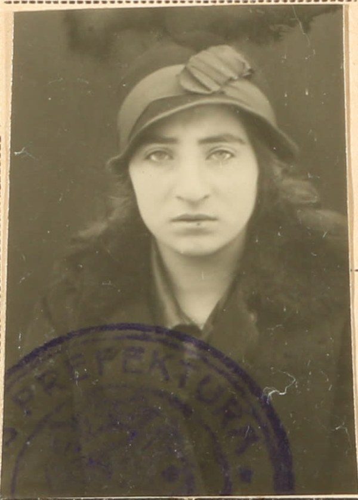
Фрида, 14 лет. Фото из латвийского паспорта, Рига, 1926
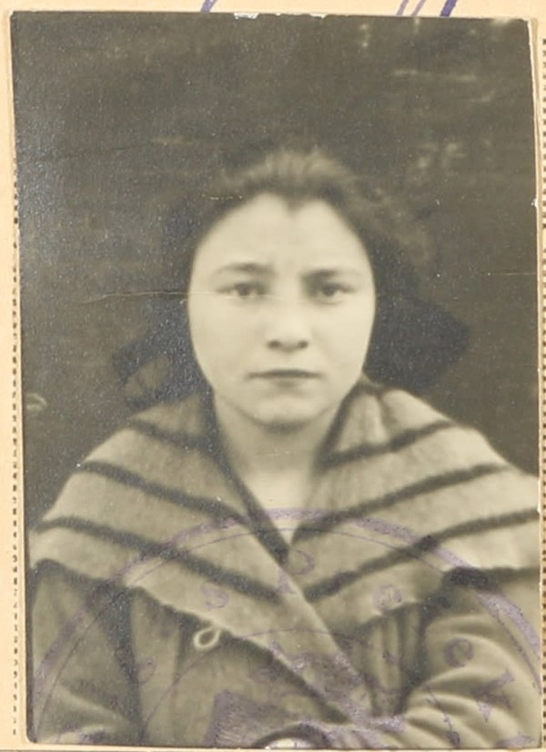
Браина (Броня), 15 лет. Рига, 1923
Якобштадт, XIX векродовое гнездо: Ицик Мозесштам и его сыновья
Двинск, 1897перепись: семья Янкеля-Мейше «Можестамъ»
17 марта 1912рождение Фриды, Двинск
Нижний Новгород, 1924–25брат-печатник и сестра Броня уже здесь
Горький, 1940-еФрида — учитель истории школы № 9
Древо рода
Главная линия выделена. Ветви двоюродной родни свёрнуты, их можно раскрыть. Даты до 1918 года даны по документам, в основном по старому стилю.
Ицик (Ицхак) Мозесштам · Якобштадт, Курляндская губ. · умер до декабря 1879 г. (внуков называли в его честь)
Янкель-Мозес (Янкель-Мейше) Ицкович Можестам · род. ок. 1859, Якобштадт · сапожник, якобштадтский мещанин · в 1897–1912 гг. Двинск, Шильдеровская ул. · в 1907 г. избиратель в Думу (Екабпилс)
∞ 1) Хая-Ита Гдальевна, урожд. Абрамович · род. ок. 1862 · в 1897 г. 35 лет
Эмма (Сора-Этка) Яковлевна · 1886 – 1972, Горький перепись + надгробие
Исаак (Ицик-Мордхе) Яковлевич · 25.09.1888 – 15.04.1980, Горький · печатник (вероятно) ∞ Любовь Борисовна 1885–1971 перепись + надгробие
Софья Яковлевна «Мозенштан» · 1891 · из Екабпилса, в 1942 г. санитарка в Горьком гипотеза
Геня (Голда-Лея) Яковлевна · 1895 – 1974, Горький перепись + надгробие
Наум (Нохим) Яковлевич · 1896, Двинск · житель Горького; в 1938 арестован, через 11 мес. освобождён, дело прекращено перепись + Книга памяти
∞ 2) Ривка (Роха-Лотка) Гдалиевна, урожд. Абрамович · вероятно, младшая сестра первой жены · латвийский паспорт № 4718 · в 1925 г. жила в Латвии
Браина (Броня) · 19.04 (2.05).1908, Двинск, близнец · швея, Рига 1923 → Нижний Новгород, вожатая на фабрике «Швейпром», 1925
Фрида Яковлевна Можестам · 4 (17).03.1912, Двинск · Рига 1926 → Горький · учитель истории школы № 9, медаль «За трудовую доблесть»
∞ 1) Владимир Сергеевич Филиппов · 1906, Муром · брак в начале 1930-х · позже ст. политрук, † 8.09.1941 под Волокитино вероятно
дочь Евгения Владимировна Филиппова, род. 15.04.1933 (семейная память)
∞ 2) Павел Андреевич Широков · 1913/1914, д. Бутюнки Зуевского р-на Кировской обл. · офицер госбезопасности: особый отдел НКВД / «СМЕРШ» 10-й армии, капитан · мать — Анисья Тарасовна брак по семейной памяти
дочь Светлана Павловна Широкова, в браке Жирова (семейная память)
Гельман (Хелман-Вульф) Ицкович · род. ок. 1844 · извозчик ∞ Фейгадети и внуки
Яков (Якоб-Элиас) Гельманович · 1876 · извозчик ∞ Брейне · 1942: эвакуирован в Шахунский р-н Горьковской обл.
Рахмиэль-Нохум · 1895 · жестянщик ∞ Маша · 1942: Петуховский р-н Челябинской обл.
Фридапрямая линия и брат с сёстрамиродняне доказано
Важное уточнение к семейному рассказу. Исаак (1888), Эмма (1886) и Геня (1895) на 17–26 лет старше Фриды. По переписи 1897 года их мать — Хая-Ита Гдальевна. Мать Фриды — Ривка Гдалиевна, урождённая Абрамович. Хае-Ите в 1912 году было бы около 50 лет, поэтому, скорее всего, это две разные женщины: отец овдовел и женился на сестре покойной жены. Тогда Исаак, Эмма и Геня приходятся Фриде единокровными братом и сёстрами, а по матерям ещё и двоюродными. Это пока гипотеза: запись о втором браке не найдена.
Мужья и дочери Фриды
У Фриды две дочери: Евгения Владимировна Филиппова и Светлана Павловна Широкова (в браке Жирова), дочь Павла Широкова. Это сведения от семьи. О дочерях в досье собрано только это: если они живы, их личные данные не ищутся и не публикуются. Фрида, по воспоминаниям семьи, всю жизнь оставалась Можестам. Документы это подтверждают: в 1940-е и в 1950-е годы она везде Можестам.
Отец Евгении — Владимир, первый муж Фриды. В общедоступном древе на Geni.com Фрида указана как жена Владимира Сергеевича Филиппова, 1906 г.р., уроженца г. Мурома Горьковской обл. В документах ЦАМО он старший политрук, преподаватель основ марксизма-ленинизма Харьковского пехотного училища (с 1940 г.). Он убит в бою 8 сентября 1941 года под с. Волокитино Сумской обл. и похоронен на восточном берегу р. Клевень.
Евгения родилась 15 апреля 1933 года, значит, Фрида вышла за Филиппова около 1932 года, в 20 лет. В древе на Geni, которое ведёт исследователь семьи Филипповых (менеджер профиля Ole Dorn), у Владимира Сергеевича две жены: Фрида Яковлевна Можестам и Татьяна Ефимовна (мать его сына Станислава; Фрида записана Станиславу мачехой). В военных документах 1941 года он уже женат в третий раз, на Анне Николаевне Масленниковой. Его родители — Сергей Дмитриевич и Мария Яковлевна (урожд. Дегтярёва); у него было шестеро братьев и сестёр: Вячеслав (Виктор), Фёдор, Валентина, София, Елена и Александра.
Выходит такая последовательность: около 1932 года — брак с Филипповым, в 1933 году родилась Евгения. Брак распался, и во второй половине 1930-х, ещё до войны, Фрида вышла за Павла Широкова, от него родилась Светлана. С начала войны Павел к семье не вернулся. Филиппов погиб в сентябре 1941 года. Фамилию Фрида ни разу не меняла. Брак с Филипповым подтверждают семейная память и древо Geni; документом его подтвердит запись о рождении Евгении в загсе.
1941 · донесение о потерях
Именной список потерь Харьковского пехотного училища
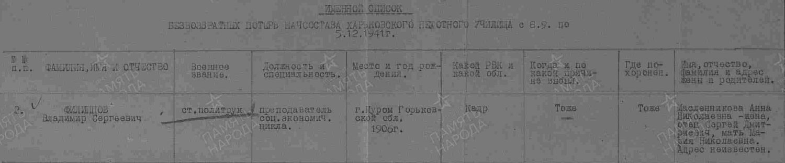
2. ФИЛИППОВ Владимир Сергеевич · ст. политрук · преподаватель соц. экономич. цикла · г. Муром Горьковской обл., 1906 г. · Кадр · Убит в бою 8.9.1941 г. под с. Волокитино Сумской обл. · В могиле на восточном берегу реки Клевень · Масленникова Анна Николаевна — жена, отец Сергей Дмитриевич, мать Мария Николаевна. Адрес неизвестен.
Учётная карточка политработника: Харьк. ВПУ, преп. основ марксизма-ленинизма с 23.VII.1940; погиб 8.9.41; жена Масленникова Анна Николаевна
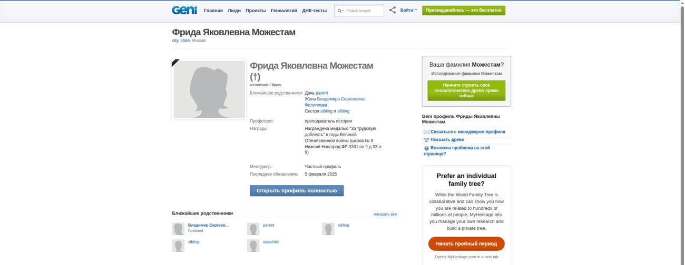
Geni.com: «Фрида Яковлевна Можестам — жена Владимира Сергеевича Филиппова; преподаватель истории». Чужое древо, использовано как наводка
Брат Наум: арест 1938 года
Младший сын от первого брака, Нохим, 1896 г.р. (в переписи 1897 г. ему полгода), в Советской России стал Наумом Яковлевичем Можестамом и жил в Горьком. В 1938 году его арестовали по статье 58 п. 6 («шпионаж»). Через 11 месяцев в горьковской тюрьме дело прекратили. В Книге памяти Нижегородской области фамилия искажена: «Можестан».
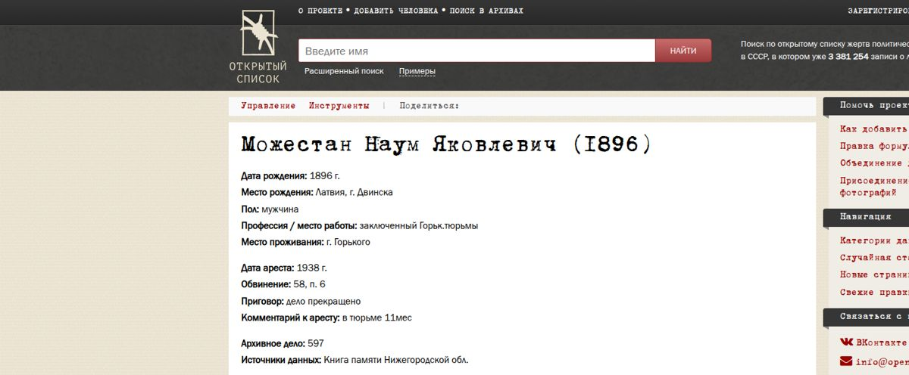
«Открытый список» по Книге памяти Нижегородской обл.: Можестан Наум Яковлевич, 1896, род. Латвия, г. Двинск; прож. г. Горький; арест 1938, ст. 58 п. 6; дело прекращено; в тюрьме 11 мес.; архивное дело № 597 · ссылка
Уголовное дело № 597 (прекращённое) хранится в архиве УФСБ по Нижегородской обл. или в ЦАНО. Родственники могут запросить его копию.
Второй муж Фриды: Павел Андреевич Широков
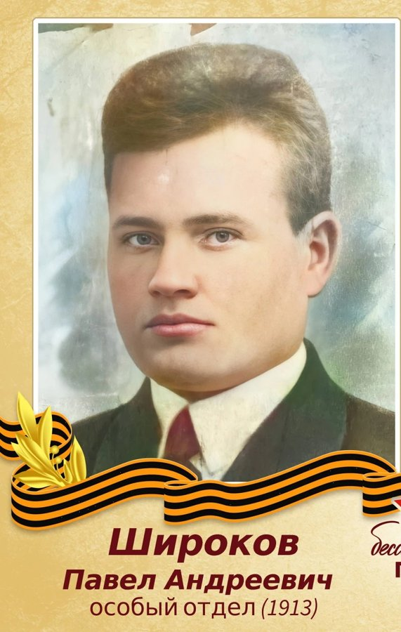
Семейная карточка «Бессмертного полка»: «Широков Павел Андреевич, особый отдел (1913)». Из семейного архива
По семейной памяти муж Фриды — Павел Андреевич Широков, сотрудник НКВД в годы войны. Именно такой офицер нашёлся в документах Центрального архива Министерства обороны:
родился в 1914 г. (на семейной карточке 1913) в д. Бутюнки Зуевского р-на Кировской обл.; русский; член ВКП(б) с 1940 г.;
в 1939–1940 гг. служил в Красной армии, затем работал в органах госбезопасности;
с ноября 1941 г. на Западном фронте, в особом отделе НКВД 10-й армии, с апреля 1943 г. — следователь отдела контрразведки «СМЕРШ» 10-й армии, старший лейтенант госбезопасности;
награды: медаль «За оборону Москвы», орден Красной Звезды (16.05.1943), орден Отечественной войны II ст. (13.09.1945), медаль «За победу над Германией» (уже капитан, Харьковский военный округ);
в 1943 г. его домашний адрес — ст. Зуевка Кировской обл., семья — мать Анисья Тарасовна Широкова. Жена в наградном листе не названа.
По семейной памяти Фрида и Павел поженились ещё до войны. Когда началась война, Павел ушёл на фронт и к жене в Горький не вернулся: его перевели служить в другое место. Документы с этим согласуются. В 1943 году в наградном листе он называет семьёй только мать. Фрида в годы войны записана под девичьей фамилией Можестам. К 1945–1946 годам Павел, уже капитан, служит в Харьковском военном округе. Есть и географическая связь: его родная Зуевка до конца 1934 года входила в Горьковский край, так что дорога из вятской деревни в Горький для молодого человека была естественной.
Совпадают имя, отчество, фамилия и служба в особом отделе НКВД в войну. Год рождения на семейной карточке на один год расходится с архивным. Документа, прямо связывающего этого офицера с Фридой и Горьким, пока нет. Его даст запись о браке в загсе или личное дело сотрудника в архиве ФСБ.
1943 · наградной лист
Наградной лист на ст. лейтенанта ГБ Широкова
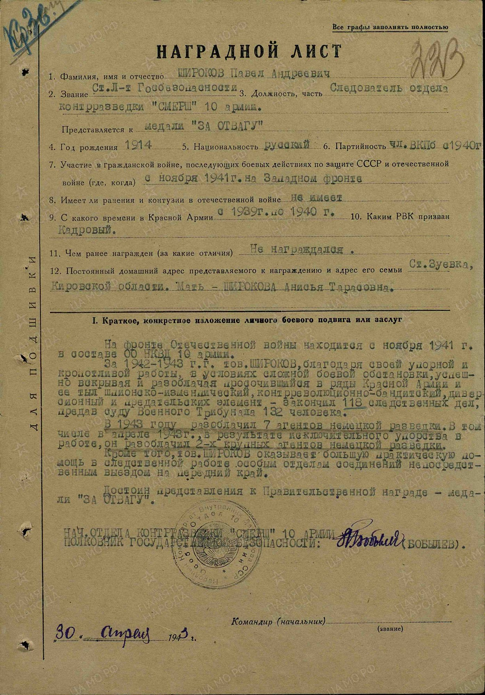
ШИРОКОВ Павел Андреевич · Ст. л-т Госбезопасности · Следователь отдела контрразведки «СМЕРШ» 10 армии · 1914 · русский · чл. ВКПб с 1940 г. · с ноября 1941 г. на Западном фронте · в Красной Армии с 1939 г. по 1940 г., кадровый · Постоянный домашний адрес: ст. Зуевка, Кировской области. Мать — ШИРОКОВА Анисья ТарасовнаВ описании заслуг: с ноября 1941 г. в составе ОО НКВД 10 армии; за 1942–1943 гг. закончил 118 следственных дел, по которым 132 человека преданы суду военного трибунала; в 1943 г. разоблачил 7 агентов немецкой разведки, а также выезжал на передний край в помощь особым отделам соединений. Представлен к медали «За отвагу», награждён орденом Красной Звезды (приказ ВС 10 А № 296 от 16.05.1943). Подписал начальник ОКР «СМЕРШ» 10 армии полковник ГБ Бобылев, 30.04.1943.
ЦАМО ф. 33, оп. 682526, д. 972 · «Память народа» · изображение оригинала
История семьи
Якобштадт: жестянщики и извозчики
Якобштадт (ныне Екабпилс) — уездный городок Курляндской губернии на правом берегу Двины. Его евреи были приписаны к городу как мещане и платили подати общине. Около середины XIX века здесь жил Ицик Мозесштам. По еврейскому обычаю детей называют в память умерших родственников. В 1879 году внука Ицика назвали Ицик-Гилель, в 1884-м — Ицик-Мотель. Значит, к концу 1879 года Ицика уже не было в живых. Его сыновья занимались ремеслом: Хоне был жестянщиком, Гельман — извозчиком. Ремесло перешло к внукам: в 1941 году извозчиками и жестянщиками Екабпилса всё ещё были Мозестамы. Третий сын, Янкель-Мозес, стал сапожником.
Двинск, 1897: шестеро на Шильдеровской
К 1890-м годам Янкель-Мозес перебрался в Двинск, большой губернский город с крепостью и железнодорожным узлом. Евреи составляли почти половину его жителей. 28 января 1897 года счётчик Первой всеобщей переписи записал в квартире на Шильдеровской улице семью Можестамъ: хозяину 38 лет, жене Хае-Ите Гдальевне 35, детям 11, 10, 3 года и полгода. Сын Ицик-Мордхе станет в Советской России Исааком Яковлевичем, дочери — Эммой и Геней. В этой переписи фамилия впервые записана так, как её произносили в семье: «Можестам».
Около 1907 года Янкель-Мозес женился во второй раз, на Ривке (в быту Рохе-Лотке) Гдалиевне Абрамович. В 1908 году у них родились близнецы Иосиф и Браина, а 4 марта 1912 года (17 марта по новому стилю) — Фрида. Обе записи сделал Двинский раввинат. Отец по-прежнему значится «якобштадтским мещанином».
Война и граница
Летом 1915 года фронт Первой мировой войны подошёл к Двине, и Двинск на два года стал прифронтовой крепостью. Евреев Курляндии выселили вглубь России. Беженцы Мозесштам в 1915–1917 годах отмечены в Самаре; связь с семьёй Фриды пока не установлена. После 1918 года Двинск (Даугавпилс) и Екабпилс оказались в независимой Латвии, а часть семьи — по другую сторону новой границы. Старший сын Исаак, судя по всему, остался в Советской России и к середине 1920-х работал печатником в Нижнем Новгороде.
Рига и бегство на восток
Мать с младшими детьми жила в Латвии. В 1923 году пятнадцатилетняя Браина получила в Риге паспорт, в графе «занятие» написано «швея». В 1926 году паспорт получила четырнадцатилетняя Фрида. Обе приписаны к Екабпилсу, обе живут в Риге.
Дальше рассказ продолжает журнал «Вожатый». В 1925 году он поместил очерк «Лицо вожатого» о восемнадцатилетней Броне Можестам, швее 6-го разряда с нижегородской фабрики «Швейпром», где работали 800 человек:
«До приезда в Нижний жила в Латвии. Там уже начала работу на производстве… В Латвии работала у частного хозяйчика и усилиями брата-печатника, работающего в Нижнем, вырвалась в Советскую Россию… Регулярно 50% отсылает своей матери в Латвию».
Броня вступила в комсомол в 1923 году, а в 1925-м уже была кандидатом в партию и вела сразу три пионерских отряда. Возраст, профессия и латвийское прошлое совпадают с данными паспорта Браины 1923 года. Так семья и пришла в Нижний Новгород: первым туда попал брат, за ним по одному перетянулись сёстры. Эвакуация 1941 года тут ни при чём.
Горький: учительница истории
В 1932 году Нижний Новгород переименовали в Горький. Когда туда переехала Фрида, пока неизвестно: в 1926 году она ещё жила в Риге. В годы Великой Отечественной войны Фрида Яковлевна Можестам, преподаватель истории школы № 9, была награждена медалью «За трудовую доблесть». Список награждённых хранится в Центральном архиве Нижегородской области (ЦАНО ф. Р-3301, оп. 2, д. 33, л. 9). Фамилию она сохранила.
Бывший ученик, художник, подписывающийся «Липа», вспоминает её уроки уже 1950-х годов:
«Наша учительница, Фрида Яковлевна Можестам очень хорошо рассказывала о долине Нила, в которой жили люди, о том, как при разливе реки плодородный ил удобрял поля земледельцев…»
Он же пишет о ней как о «еврейке-учительнице», которая знала историю своего народа, но в советской школе не могла о ней говорить. Так совпали семейная память («бабушка была учителем истории»), архивный список и воспоминания ученика.
1941: эвакуация родни
Летом 1941 года, перед приходом немцев, часть екабпилсских Мозестамов успела уехать на восток. Списки эвакуированных 1942 года, копии которых хранит Яд Вашем, показывают, где они оказались. Семьи двоюродных братьев Фриды, Якова и Хане Гельмановичей, попали в Шахунский район Горьковской области, в колхоз «Красный Партизан» (деревня Н.-Полдневка). Семья Або-Гирша — в Котельнич Кировской области, где фамилия записана «Можестам». Семья Рахмиэля — в Петуховский район Челябинской области. В Горьком в 1942 году значится и Софья Яковлевна «Мозенштан» 1891 года рождения из Екабпилса, санитарка госпиталя № 29, адрес — ул. Короленко, д. 24, кв. 4. Возможно, это ещё одна дочь Янкеля-Мозеса, но доказательств пока нет. Те, кто остался в Латвии, погибли в Холокосте. Например, Лея Мозестам 1912 года рождения значится в Рижском гетто.
Марьина Роща
Брат и сёстры Фриды прожили в Горьком долгую жизнь. На кладбище Марьина Роща в Нижнем Новгороде рядом стоят два одинаковых памятника: «Можестам Эмма Яковлевна 1886–1972» и «Можестам Геня Яковлевна 1895–1974». Под общим камнем похоронены Исаак Яковлевич (25.09.1888 – 15.04.1980) и его жена Любовь Борисовна (25.07.1885 – 10.09.1971). На камне надпись «Вы для нас вечно живые».
Хронология
Дата
Событие
Источник
ок. 1844
Рождение Гельмана (Хелмана-Вульфа) Ицковича; в 1871 г. ему 27 лет
рекрутские списки Курляндии 1871 (JewishGen)
1857
Рождение Хоне Ицковича, Якобштадт
names.lu.lv
ок. 1859
Рождение Янкеля-Мозеса Ицковича, Якобштадт
перепись 1897 (38 лет)
до 12.1879
Смерть патриарха Ицика (внуки названы в его память)
метрики Якобштадта (JewishGen)
1886
Рождение Эммы
перепись 1897; надгробие
25.09.1888
Рождение Исаака (Ицика-Мордхе)
надгробие; перепись 1897
1895
Рождение Гени
надгробие; перепись 1897 (3 года)
28.01.1897
Перепись: семья Можестам в Двинске, Шильдеровская ул.
LVVA 2706/1/47, кадр 135
1907
Янкель Мозештам — избиратель в Государственную думу, Екабпилс
списки избирателей 1907 (JewishGen)
19.04.1908
Рождение близнецов Иосифа и Браины, Двинск
LVVA 4359/2/12, кадр 75
04.03.1912 = 17.03.1912
Рождение Фриды, Двинск
LVVA 4359/2/16, кадр 41
1915–1918
Фронт на Двине; выселение евреев Курляндии вглубь России
исторический фон
01.06.1923
Паспорт Браины, Рига, швея
LVVA 2996/12/29818
1923
Броня Можестам вступает в комсомол (уже в Нижнем?)
«Вожатый» 1925
1925
Броня — вожатая на фабрике «Швейпром», Нижний Новгород; брат — печатник в Нижнем; мать в Латвии
«Вожатый» № 16, 1925
16.12.1926
Паспорт Фриды, Рига
LVVA 2996/12/29819
1932
Нижний Новгород переименован в Горький
исторический фон
ок. 1932
Брак Фриды с Владимиром Сергеевичем Филипповым (1906, Муром)
семейная память; Geni
15.04.1933
Рождение дочери Евгении Владимировны Филипповой
семейная память
вторая пол. 1930-х
Брак Фриды с Павлом Андреевичем Широковым; рождение дочери Светланы
семейная память
1938
Арест Наума Яковлевича в Горьком (ст. 58-6); через 11 мес. дело прекращено
Книга памяти Нижегородской обл.
08.09.1941
Гибель ст. политрука В. С. Филиппова под Волокитино (Сумская обл.) — по Geni, мужа Фриды
ЦАМО ф. 58, оп. 818883, д. 507
1941–1942
Екабпилсская родня эвакуирована в Шахунский р-н Горьковской обл., Котельнич, Петуховский р-н; Софья «Мозенштан» — в Горьком
списки эвакуированных 1942 (Яд Вашем)
1914
Рождение Павла Андреевича Широкова, д. Бутюнки Зуевского р-на Кировской обл. (по семейной карточке — 1913)
ЦАМО, БД офицеров
11.1941 – 1945
Павел Широков — особый отдел НКВД, затем ОКР «СМЕРШ» 10-й армии, Западный фронт; орден Красной Звезды 16.05.1943
ЦАМО ф. 33, оп. 682526, д. 972
1941–1945
Фрида — учитель истории школы № 9 г. Горького, медаль «За трудовую доблесть»
ЦАНО ф. Р-3301, оп. 2, д. 33, л. 9
1950-е
Фрида ведёт историю Древнего мира в горьковской школе
воспоминания «Липы»
1971 – 1980
Смерть Любови Борисовны (1971), Эммы (1972), Гени (1974), Исаака (1980); кладбище Марьина Роща
надгробия; JOWBR
Документы
1897 · перепись
Семья Можестам в Двинске
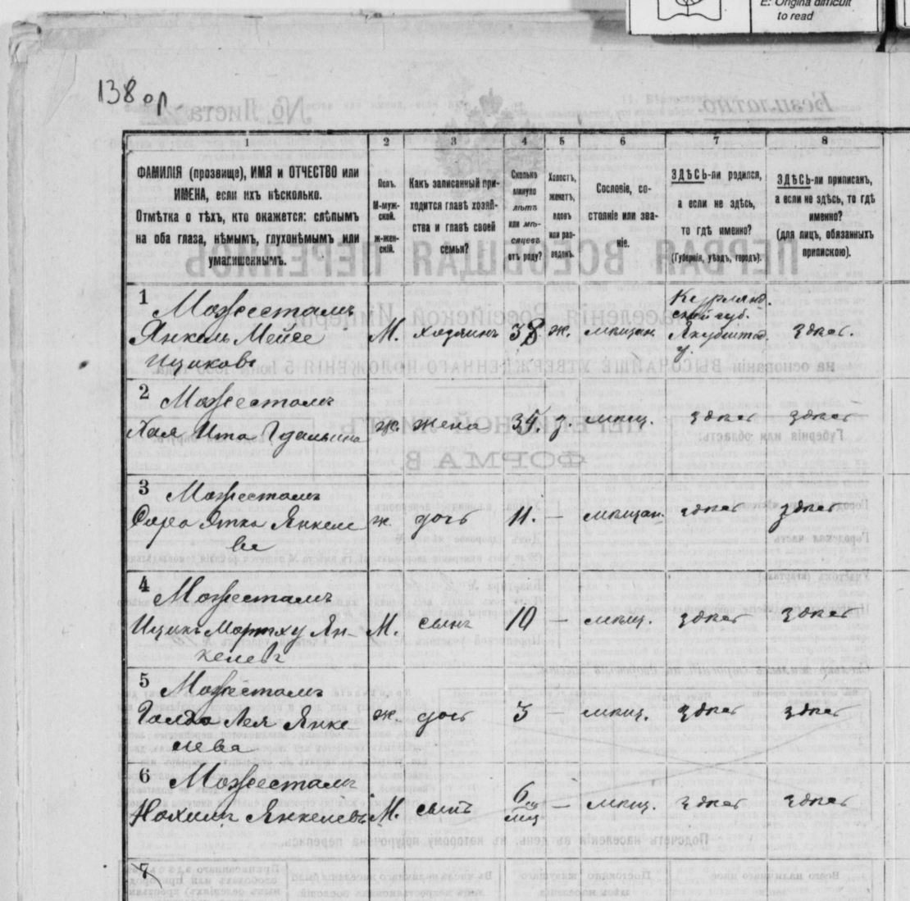
1. Можестамъ Янкель Мейше Ицковъ · М · хозяинъ · 38 · ж[енат] · мѣщанинъ · Курляндской губ., Якобштадт. у. · 2. Можестамъ Хая Ита Гдальевна · ж · жена · 35 · 3. Можестамъ Сора-Этка Янкелева · дочь · 11 · 4. Можестамъ Ицикъ Мордхе Янкелевъ · сынъ · 10 · 5. Можестамъ Голда-Лея Янкелева · дочь · 3 · 6. Можестамъ Нохимъ Янкелевъ · сынъ · 6 мѣс.По именному указателю JewishGen: Двинск, Шильдеровская ул., 83; занятие главы семьи — сапожник. Имена дочерей сверены с волонтёрской транскрипцией (usdine.free.fr): Сора-Этка и Голда-Лея; там же первая жена названа урождённой Абрамович.
LVVA ф. 2706, оп. 1, д. 47, кадр 135 (л. 138 об.) · Raduraksti · изображение оригинала
1897 · перепись · семья матери (кандидат)
Абрамовичи на Хлебной улице
Обе жены отца Фриды — урождённые Абрамович и обе Гдалиевны: значит, это почти наверняка две сестры. В той же переписи 1897 года в Двинске живёт Гдаля-Янкель Меерович Абрамович, 60 лет, мещанин, уроженец Ковенской губернии (приписан к Видзам). Его жена Геня Эльевна, 40 лет, родом из Якобштадта, с ними дети Бинка, Элька и Эстер. Ривки в этой квартире нет, поэтому это пока только кандидат в деды Фриды.
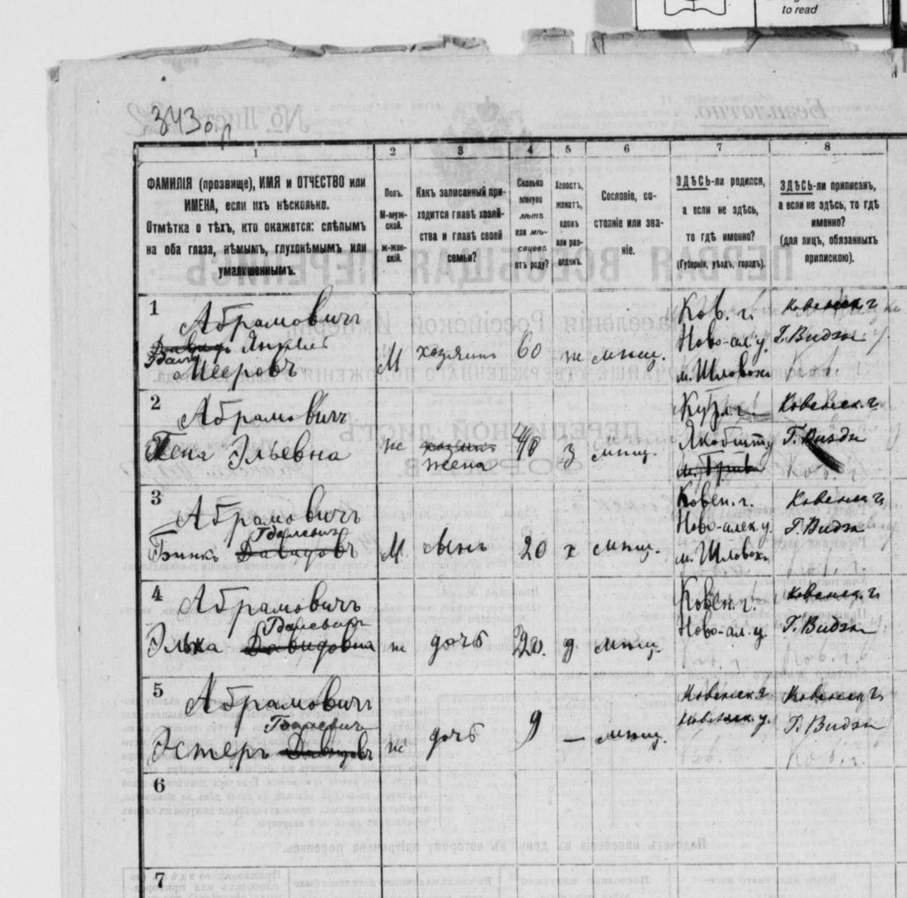
LVVA ф. 2706, оп. 1, д. 49, кадр 348 · кандидат, не доказано
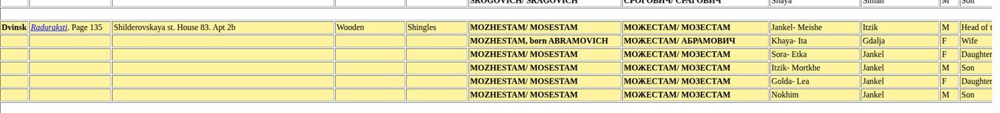
Волонтёрская транскрипция переписи (usdine.free.fr): «MOZHESTAM, born ABRAMOVICH, Khaya-Ita, Gdalja»; дочери Sora-Etka и Golda-Lea
Latvijas (Jēkabpils) pilsone · Frida Jankeļa m. Mozesštam · 16. decembrī 1926 · dz. 1912 Daugavpilī · dzīves vieta Rīga · ebrejiete · Mozus ticības · neprecējusies · mātes Latv. pase № 4718 · paraksts: F. MožestamГражданка Латвии (приписка Екабпилс), родилась в 1912 г. в Даугавпилсе, живёт в Риге, еврейка, иудейского вероисповедания, не замужем. Подпись: «F. Možestam».
LVVA ф. 2996, оп. 12, д. 29819 · копия Yad Vashem M.43/LVVA/28328 · карточка
1923 · паспорт
Паспорт Браины № 229002
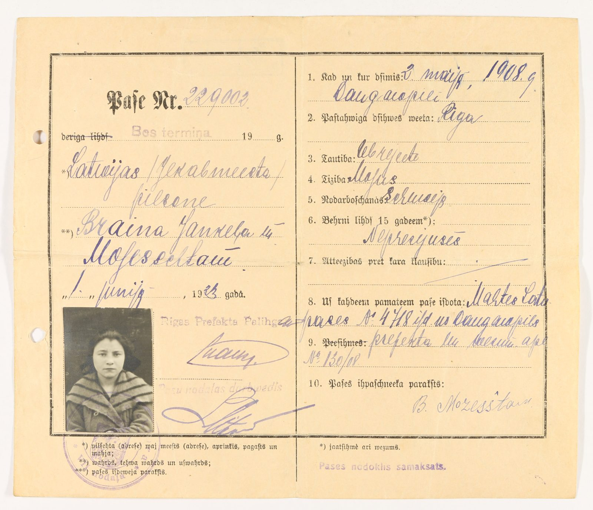
Braina Jankeļa m. Mozesštam · 1. jūnijā 1923 · dz. 2. maijā 1908 Daugavpilī · Rīga · šuvēja · neprecējusies · mātes Latv. pase № 4718, dzimš. apl. № 130/08Род. 2 мая 1908 г. в Даугавпилсе, живёт в Риге, швея, не замужем. Номер метрического свидетельства 130/08 совпадает с номером записи в метрической книге 1908 г.
LVVA ф. 2996, оп. 12, д. 29818 · Yad Vashem M.43/LVVA/28327
1925 · журнал
«Вожатая Можестам Броня»
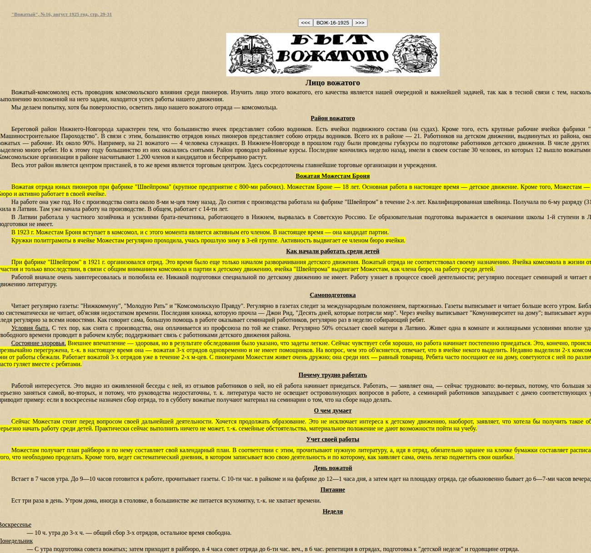
Снимок публикации текста журнала; цитаты о Броне выделены
«Вожатый», 1925, № 16, очерк «Лицо вожатого» · публикация текста · веб-перепечатка, оригинал журнала не сверен
1941–1945 · архивный список
Фрида Яковлевна — учитель истории школы № 9
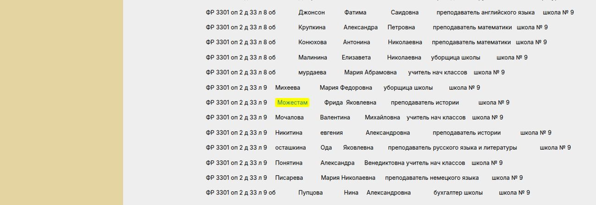
Выписка из списка награждённых медалью «За трудовую доблесть», опубликованная на форуме СВРТ
ЦАНО ф. Р-3301, оп. 2, д. 33, л. 9 · форум СВРТ · выписка; сам лист не просмотрен
ЦАНО Р-3301 (выписка); воспоминания ученика; семейная память
подтверждено
Исаак, Эмма, Геня — дети Янкеля-Мозеса
перепись 1897 (дети нужного возраста); надгробия с отчеством «Яковлевич/на» и фамилией Можестам; семейная память
подтверждено по совокупности
Исаак, Эмма, Геня — от первой жены, Хаи-Иты
перепись 1897; возраст матери
вероятно
Броня из «Вожатого» = Браина
возраст 18 в 1925; швея; Латвия; фамилия
вероятно
«Брат-печатник в Нижнем» = Исаак
единственный известный взрослый брат в Нижнем
гипотеза
Янкель-Мозес — брат Гельмана и Хоне
отчество «Ицков»; одна фамилия; приписка к Якобштадту
вероятно
Софья «Мозенштан» (1891) — сестра
отец Яков, Екабпилс, Горький, год рождения
гипотеза
Муж Фриды — Павел Андреевич Широков
семейная память, семейное фото
семейная память
Этот Широков = офицер ОО НКВД/«СМЕРШ» 10 А, 1914 г.р.
ФИО и особый отдел совпадают; год рождения 1913/1914
вероятно
Обе жены Янкеля-Мозеса — урождённые Абрамович, сёстры
перепись 1897 (транскрипция) + метрики 1908, 1912
вероятно
Наум Яковлевич — брат Фриды, арестован в 1938
перепись 1897 + Книга памяти (род. Двинск 1896)
подтверждено
Первый муж — В. С. Филиппов, 1906, Муром (брак ок. 1932)
отчество и год рождения дочери (1933) + древо Geni; к 1941 у него другая жена
вероятно
Фрида родилась в Риге
семейный рассказ; документы называют Двинск
противоречит документам
Семья приехала в Горький в эвакуацию 1941 г.
брат и сестра в Нижнем уже в 1920-х
не подтверждается
Что дальше
Запрос в ЦАНО (Центральный архив Нижегородской области): ф. Р-3301, оп. 2, д. 33, л. 9 — сам наградной лист. Наградное дело может содержать анкету Фриды: год приезда в Горький, образование, стаж.
Загс Нижнего Новгорода: записи о смерти Исаака, Эммы, Гени и Фриды. В них указаны место рождения и родители, это закроет вопрос о двух браках отца. Записи о смерти до 1946 года и о рождении до 1926 года уже переданы в архив.
«Горьковская коммуна» 1940 г. (№ 12 и № 222) упоминает «тов. Можестам». Сайт областной библиотеки сейчас недоступен, проверить позже.
Брак Янкеля-Мозеса и Ривки Абрамович (около 1906–1907): браки Двинска 1904 (LVVA 5024/2/276) и книги Риги. Брак не нашёлся в Якобштадте (1900–1907) и Двинске (1906–1907).
Архив ФСБ (Центральный архив ФСБ России или управление ФСБ по Нижегородской обл.): личное дело сотрудника Широкова Павла Андреевича, 1914 г.р. В анкетах сотрудников госбезопасности указаны жена и её родственники. Запрос подают ближайшие родственники.
Запись о браке Фриды и Павла (до 1941 г., вероятно Горький) — архив загса Нижегородской обл.; в ней будут его год и место рождения, что окончательно подтвердит личность. Там же может быть запись о разводе.
Метрики Зуевского прихода Кировской губ. за 1913–1914 гг. (ЦГАКО, г. Киров) — запись о рождении Павла и имя его отца Андрея.
Вопросы семье: когда Фрида приехала в Горький? Её муж и дети, фотографии, письма, трудовая книжка? Знали ли в семье Броню (Браину), Иосифа, Нохима, Софью?